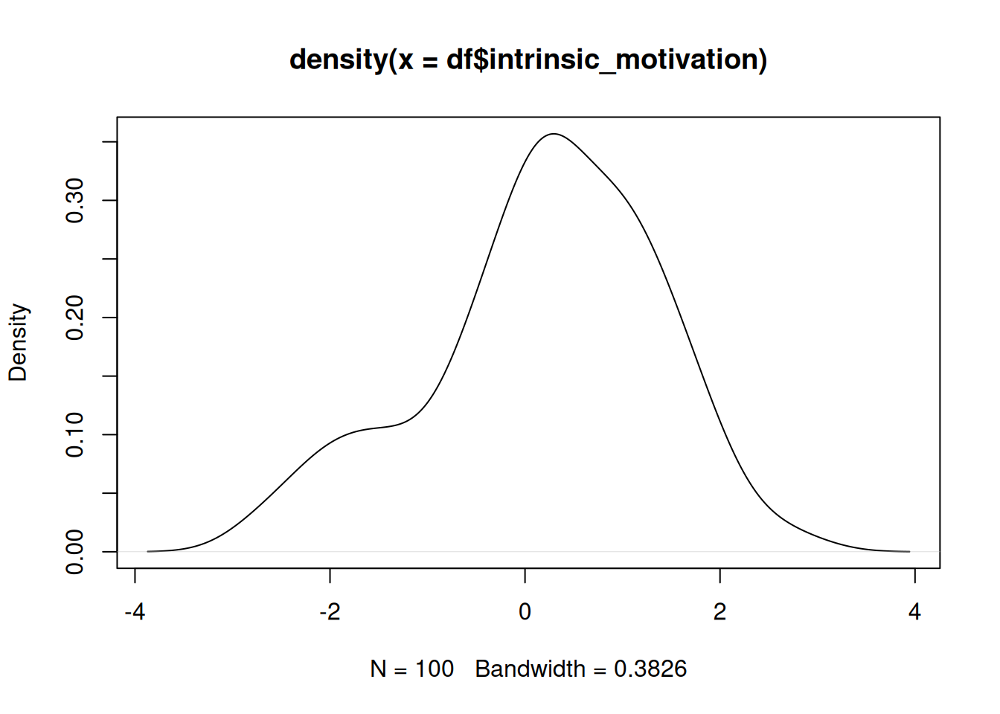
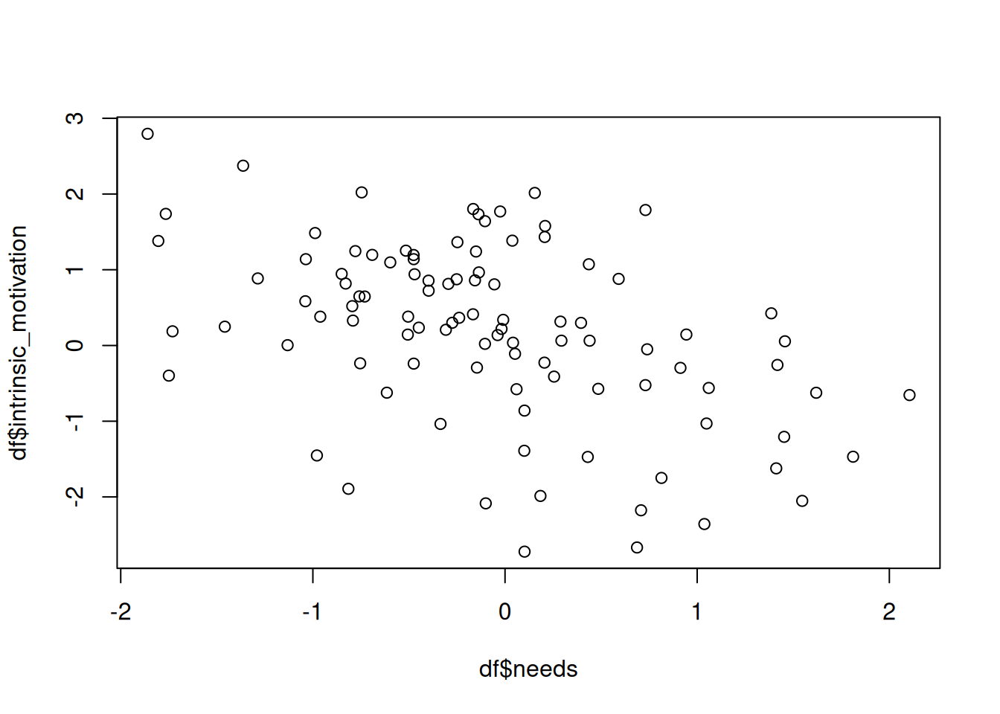

In this tutorial, you will go through some of the steps of theory formalization, following the Abductive Formal Theory Construction (AFTC) framework. We will use Self-Determination Theory (SDT) as a guiding example.
The code chunks in this tutorial are also available in the patterns_principles_exercises project, in the file tutorial_formal_theory.R.
“Deci’s early studies (e.g., 1971, 1972) were provocative in showing that contingent extrinsic rewards could have negative effects on subsequent interest and persistence (see Ryan, Ryan, & Di Domenico, 2019).”
“These “undermining” effects of rewards on intrinsic motivation did not occur invariantly but were conditional. As summarized in Deci and Ryan (1980a), rewards have negative effects on intrinsic motivation when used in controlling ways, that is, when applied in order to externally pressure or induce people to perform certain behaviors or meet certain standards. Such controlling reward contingencies can undermine the experience of autonomy essential to intrinsic motivation. In contrast, rewards can have more positive, or at least no negative, effects on intrinsic motivation when experienced as informational”
Discuss with your group, and describe concisely in your own words, what “phenomena” this excerpt describes.
5.2.1.2 Generate an Initial Verbal Theory
You have previously worked with a DAG representing SDT. The vignette Formalizing Self-Determination Theory describes how this FAIR theory was created based on the original Self-Determination Theory (Deci & Ryan, 2012). It was specified as a Directed Acyclic Graph, or DAG: a diagram that specifies the causal relations proposed by a theory. Such diagrams can be used to derive hypotheses, select control variables for causal inference, and conduct simulation studies (as we will do in this tutorial).
Which portions of the DAG are relevant to the phenomenon you’ve identified?
Make a simplified version of the DAG that leaves out all irrelevant components.
Is the simplified DAG sufficient to explain your identified phenomenon? If it helps, think of the arrows as IF/THEN links. If the causes are present, does the outcome always follow?
If not: What additions would you need to make to the DAG to properly describe the phenomenon?
5.2.1.3 Formalize the Initial Theory
We will construct a very basic formalization for the section of SDT that you have selected.
First, we will simplify the DAG. You can do this by hand; suppose we are interested in studying the effect of intrinsic motivation on well-being. We do not need the entire theory to hypothesize about this specific relationship. We can simplify the DAG to derive a restricted version of the theory that includes all variables that might confound the relationship of interest between intrinsic motivation and well-being:
Do the same for the phenomenon you identified. When you have done so, we can now create some code to generate a synthetic dataset based on this simplified DAG, using the simulate_data() function. This function samples random values for exogenous variables and computes endogenous variables as functions of their predictors (linear functions, by default). By default, regression coefficients are randomly sampled in the range [-0.6, +0.6] unless specific values are provided by the user. You might improve the model by choosing more realistic parameter values, for example, using the conventional values for null (0), small (.2), or medium (.4) effect sizes. By default, normal distributions are assumed for exogenous variables and residual error, unless other distributions are specified.
Here, we first generate the code, then examine it in the console, then write it to a file, and finally, run that file to create the simulated data.
sim_code <-simulate_data(sdt_pruned, n =100, run =FALSE)sim_code
Put this code into a separate R-file. When you run it all, it will create an object called df, which is a table with 100 observations for all variables. Each exogenous variable (causes) is generated by drawing random samples from a normal distribution. Each endogenous variable (effects) is generated by multiplying those exogenous variables with a regression coefficient; larger values mean that the exogenous variable has a larger effect. Then, random noise is added, which represents variability due to other causes not part of your model. If you want this random variability to be smaller, change the sd argument of the rnorm() function.
5.2.1.4 Evaluating the Initial Theory
Examine the properties of the dataset using any of the following methods, or some of your own choosing:
5.2.1.4.1 Examining descriptive statistics
You can examine the distributions of individual variables using descriptive statistics.
Do not try all of these, instead, discuss which one should capture the pattern you’re looking for in the data:
Univariate distribution, or patterns related to the center and spread of the distribution of one variable: Descriptive statistics and density plots
Relationships between two variables: Scatter plots and bivariate regression
Interaction effects (the effect of one variable depends on the value of another variable): Regression with an interaction term (difficult to plot, because that would be a 3-dimensional plot)
5.2.1.4.2 Univariate Distribution
For example, to obtain a summary of all variables in the dataset:
name type n missing unique mean median mode
1 external_event numeric 100 0 100 0.021 -0.013 -0.013
2 intrinsic_motivation numeric 100 0 100 0.191 0.299 0.299
3 needs numeric 100 0 100 -0.083 -0.137 -0.137
4 wellbeing numeric 100 0 100 0.031 0.086 0.086
mode_value sd v min max range skew skew_2se kurt kurt_2se
1 NA 1.08 NA -2.7 2.3 5.0 -0.018 -0.037 -0.48 -0.50
2 NA 1.17 NA -2.7 2.8 5.5 -0.472 -0.977 -0.21 -0.22
3 NA 0.84 NA -1.9 2.1 4.0 0.236 0.488 -0.12 -0.13
4 NA 1.06 NA -2.5 2.2 4.8 -0.063 -0.131 -0.64 -0.67
This gives you information such as the minimum, maximum, median, mean.
Use these statistics to look for interesting properties of the data. For example: Does a variable have a particularly high or low mean? Is there a lot of variation between observations? Are some categories much more common than others?
You can also use base R plots to visually examine the univariate distribution of an individual variable. For a continuous variable, you can examine its distribution with a density plot:
plot(density(df$intrinsic_motivation))

Use the plots to look for interesting patterns. For example: Is a distribution symmetric or skewed? Are there possible outliers?
5.2.1.4.3 Relationship between Two Variables
You can test the effect of one variable on another by running a bivariate regression, e.g.:
Call:
lm(formula = intrinsic_motivation ~ external_event, data = df)
Residuals:
Min 1Q Median 3Q Max
-2.58847 -0.47485 0.00294 0.70878 2.33139
Coefficients:
Estimate Std. Error t value Pr(>|t|)
(Intercept) 0.1815 0.1080 1.680 0.0961 .
external_event 0.4285 0.1001 4.281 4.34e-05 ***
---
Signif. codes: 0 '***' 0.001 '**' 0.01 '*' 0.05 '.' 0.1 ' ' 1
Residual standard error: 1.08 on 98 degrees of freedom
Multiple R-squared: 0.1575, Adjusted R-squared: 0.1489
F-statistic: 18.32 on 1 and 98 DF, p-value: 4.344e-05
If the value of Pr(>|t|) for external_event is smaller than .05, the effect is significant. If the value of Estimate is positive, then the effect is positive - if it is negative, then the effect is negative.
To plot the relationship between two continuous variables, you can use a scatterplot:
plot(df$needs, df$intrinsic_motivation)

You can add the regression line into this plot to make the direction of the relationship easier to see:
You can test whether the effect of one variable on another is contingent on the value of a third variable by running multiple regression regression with an interaction effect, e.g.:
Call:
lm(formula = intrinsic_motivation ~ external_event * needs, data = df)
Residuals:
Min 1Q Median 3Q Max
-2.7940 -0.5022 -0.0107 0.6498 2.1095
Coefficients:
Estimate Std. Error t value Pr(>|t|)
(Intercept) 0.15607 0.10369 1.505 0.13556
external_event 0.31552 0.09582 3.293 0.00139 **
needs -0.52953 0.12368 -4.281 4.4e-05 ***
external_event:needs 0.06663 0.10705 0.622 0.53514
---
Signif. codes: 0 '***' 0.001 '**' 0.01 '*' 0.05 '.' 0.1 ' ' 1
Residual standard error: 0.9958 on 96 degrees of freedom
Multiple R-squared: 0.2986, Adjusted R-squared: 0.2767
F-statistic: 13.63 on 3 and 96 DF, p-value: 1.776e-07
If the value of Pr(>|t|) for external_event:needs is smaller than .05, the interaction effect is significant. That means that the effect of external_event on intrinsic_motivation depends on the value of needs.
5.2.2 Stage 2: Developing Theory
The final step is to make changes to your formal theory, to make it better produce the kind of data patterns that your phenomenon implies.
You will probably not have time to do so, but it is possible to make changes to the file "formal_model.R".
For example, you can:
5.2.2.1 Generating a binary variable
You can generate a binary variable using rbinom(). For example, if you want to conceptualize external_event as the presence or absence of a reward, you could simulate a variable where approximately 50% of observations have a value of 0 and 50% have a value of 1:
external_event <-rbinom(n = n, size =1, prob =0.5)
5.2.2.2 Generating an interaction effect
To make the effect of external_event on intrinsic_motivation depend on needs (e.g., does this external event satisfy needs?), add an interaction term to the equation that predicts intrinsic_motivation:
The negative coefficient on needs^2 creates an inverted n-shaped relationship: intrinsic motivation initially increases with needs, but at sufficiently high levels of needs it begins to decrease.
A positive quadratic coefficient instead produces a u-shaped relationship.
5.3 Homework
Apply the steps from the tutorial to the DAG you created for your own theory in Section 3.3.
Note that you do not have to apply all steps. Think of this week’s tutorial as a palette from which you can pick the techniques you need for your specific theory. See how far you can get, and critically reflect on the process.
Deci, E. L., & Ryan, R. M. (2012). Self-Determination Theory. In P. A. M. V. Lange, A. W.Kruglanski, & E. ToryHiggins (Eds.), Handbook of Theories of Social Psychology: Volume 1 (pp. 416–437). SAGE Publications Ltd. https://doi.org/10.4135/9781446249215